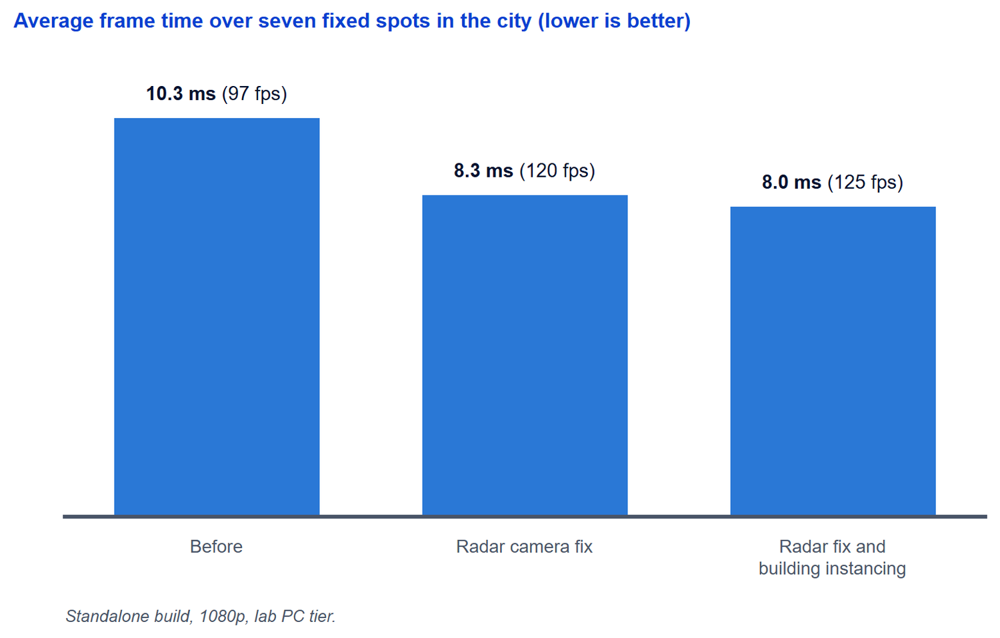
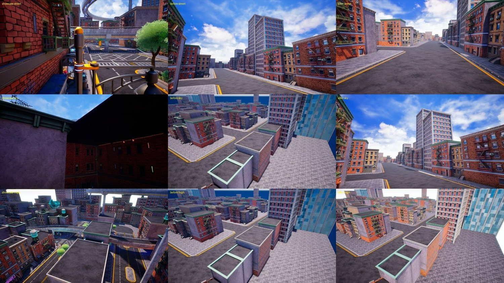
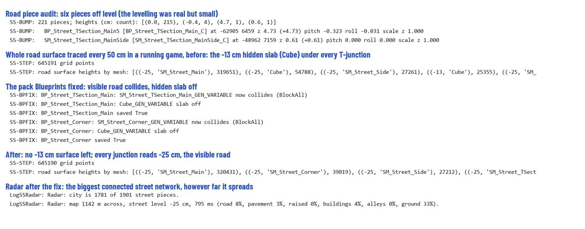
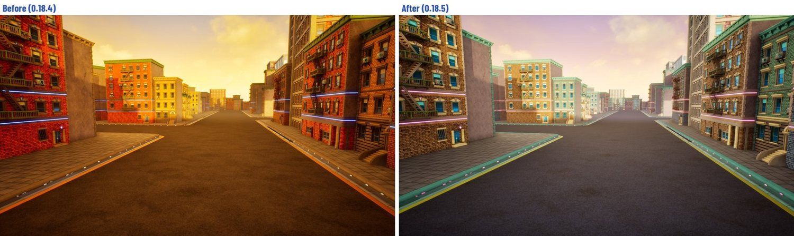

Shady Shipping
Shady ShippingCity and level
The city is the arena: a district of streets, alleys, junctions and garages where one van tries to lose four police cars. It had to run well on the uni PCs, drive smoothly, read clearly at speed and look as colourful as the game's interface.
What we set out to do
The team bought a stylised modern city pack. Its demo map is a showroom built for screenshots, not for chases. We needed a game map that Dafydd could shape into a chase district, with parcel spots, garages, police spawns, player starts and exits. The level also had to hold a high frame rate on the lab PCs without losing the pack's look.
Ownership was split clearly. Dafydd owns the level design: the layout, the new areas, paths, spawns and lane markings in his city map. Abdullah has the final say on art direction and map changes, and fixed the technical problems the map threw up.
What we built
| Feature | What it does for play |
|---|---|
| A game copy of the city | A map Dafydd can cut down for chases; the pack map stays for cutscenes |
| Dafydd's city map | The chase district: his layout, new area, paths, spawns and lane decals |
| Building instancing | Repeated building pieces drawn in batches: same look, faster frames |
| Golden hour lighting | A low warm sun with cool shade, so colours stay strong |
| Sunset pastel recolour | Each brick family its own pastel; teal kerbs; pink neon |
| Level junctions | The pack's T-junctions and corners fixed so cars no longer bump |
| Curb ramps at garages | A garage on a pavement lays its own ramp over the curb |
| Placeable markers | Parcel spots, garages, police spawns, alley paths and exits |
| Lynch's element | In our city |
|---|---|
| Paths | Main roads in cyan on the radar; alleys marked by Dafydd |
| Edges | The district boundary; two exits that open after the first star |
| Districts | Brick families recoloured as separate pastels |
| Nodes | Junctions, parcel spots and garages |
| Landmarks | Still thin; the uni playtest asked for more |
The big decisions
Full comparison: Trade-off Appendix.
| Option | Pros | Cons | Verdict |
|---|---|---|---|
| Cut the radar camera (city drawn twice a frame) | Biggest saving, nothing lost on screen | The radar needed a new design | Chosen |
| Ray tracing off | Saves 1.6 ms | Costs the look | Rejected |
| Nanite (the engine's detailed-mesh system) on its own | An engine feature | Changed nothing measurable | Rejected |
Abdullah measured before changing anything. The render thread was the limit, and its breakdown showed the city drawn once for the screen and once for each car's radar camera. Removing that, then batching the building pieces, took the city from 97 to 125 frames a second with the same picture.
| Option | Pros | Cons | Verdict |
|---|---|---|---|
| Recolour the pack's shared materials, then grade | Puts colour into the surfaces; one change covers every building | Many materials to tune | Chosen |
| A colour grade only | Minutes of work | Cannot add colour to grey or red-brown surfaces | Finishing pass only |
| New materials on each building in the map | Only this map changes | Thousands of overrides in Dafydd's working file | Rejected |
The lecturers praised the arcade interface but called the world grey. Abdullah set the art direction himself and picked "sunset pastel". One rule was kept throughout: the world stays one step less saturated than the gameplay, so vans, cops, arrows and parcels are always the brightest things on screen. Changing the pack's shared materials kept the colour out of Dafydd's map file.
Playtesting and what changed
| Date | Who played | What they found | What we changed |
|---|---|---|---|
| 26 Oct | Abdullah | The city was too slow on the target PCs | Radar camera removed, buildings batched: "much more playable" |
| 27 Oct | Abdullah | The van struggled into a garage on a pavement | A curb ramp, and the garage floor made solid to the wheels |
| 28 Oct | Check of Dafydd's map | No parcel jobs: only one parcel spot | Dafydd placed more parcel spots (one became five) |
| 29 Oct | Abdullah | Dafydd's map looked grey and flat beside the pack's showcase | A second, stacked lighting setup removed; lit for golden hour |
| 29 Oct | Abdullah | Facing the sun was blinding | Fog glow, bloom and sun disc turned down; a shot into the sun added to every check |
| 29 Oct | Abdullah | Bumps at every T-junction | The pack's junction pieces fixed |
| 30 Oct | Uni playtest, written up by Abdullah | A bigger map with more turns, landmarks and lower kerbs | Passed to Dafydd; still open |
| 31 Oct | Lecturers | The world looked grey next to the UI | The sunset pastel recolour |
Dafydd also added player starts after the first map had only one, so every player after the courier spawned in the same place. His added spawns were used at the uni playtest.
Problems and fixes
| Problem | Cause | Fix |
|---|---|---|
| Cars rode up onto an invisible 12 cm lip at T-junctions | The pack's junction piece collided with a hidden slab, not the road you see | The visible road collides; the slab is off; drain pipes no collision |
| The map looked flat and grey | Two lighting setups stacked: two suns pointing down, two fogs, two skies | Removed the duplicates, then relit |
| Raising "brightness" made bricks darker | The pack's brightness and dirt values work backwards from their names | Tested each value at an extreme first |
| The pavements never changed colour | The pack shipped the pavement with its colour switch off | Found with an extreme tint test; switch turned on |
| The radar cut off streets at the city edge | It only counted streets within 400 m; the new city is about 1 km across | It uses the biggest connected street network |
The junction bump took two tries. Six road pieces were a few millimetres to 4.7 cm off level, and levelling them did not remove the bump. Abdullah still felt it, so the whole road surface was traced every 50 cm (645,000 points) in a running game. That found the hidden slab under every T-junction. Fixing the pack's own pieces means every junction Dafydd places is right automatically.
Keeping the map safe
The city map is a single binary file, so two people cannot merge their changes to it. Fixes were made in a sandbox copy of Dafydd's latest version and checked in only when he had nothing newer. Twice, a check-in of the map caused trouble:
| What happened | Effect | What we did |
|---|---|---|
| Two map check-ins were saved over a copy from before the lighting fix | Golden hour and the levelled roads were lost | Re-ran the same scripted fixes; kept all of Dafydd's new work |
| A newer map needed a road plugin and assets not yet in the project | Players could not load into a match | Went back to the previous map until the plugin arrives |
The lighting is applied by a script from one values file, which is why it could be put back exactly. The lesson for the team is simple: update to the latest version before opening the city map.
Evidence




Every visual change was checked from fixed camera views and compared side by side. Speed-up screenshots were also compared pixel by pixel: under 0.6% of pixels differed after instancing, which is particle and edge noise. Abdullah drove the junctions and garages himself after each fix.
Lessons
- Measure the part of the frame that is the limit before cutting anything; two early ideas would have cost looks for nothing.
- A level that looks wrong may have two of something, so compare it with a known good map first.
- What a wheel touches is the collision, not the mesh you see, so trace the surface.
Latest
| Date | What changed | Why |
|---|---|---|
| 31 Oct 2026 | Sunset pastel recolour, grade and lilac haze | Lecturers: the world looked grey |
| 2 Nov 2026 | Two exits placed by Abdullah, opening after the first star | The courier needs a way out of the district |
| 9 Nov 2026 | City map returned to the previous version | The newer one needed a plugin not yet in the project |